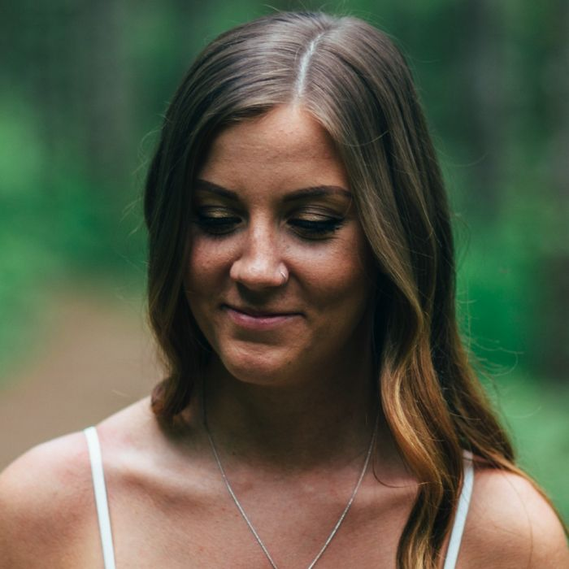
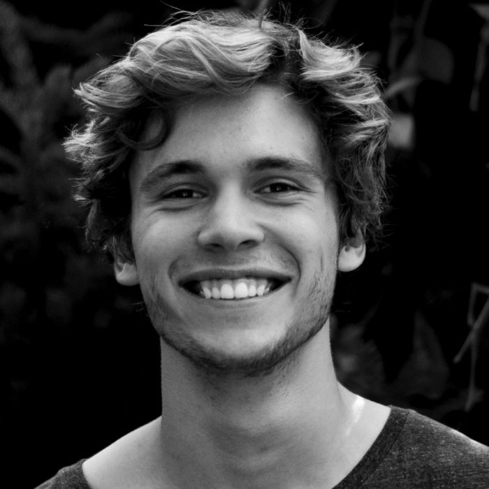
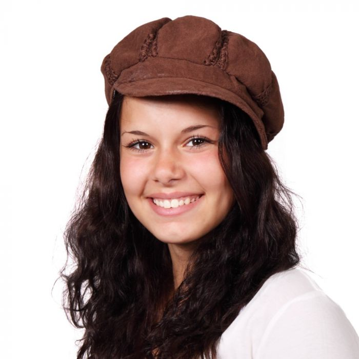

Pensjonat "U Górala" położony jest w malowniczej okolicy z widokiem na góry. Oferujemy pokoje 2, 3 i 4-osobowe z łazienkami. Do dyspozycji gości: jadalnia, grill, parking oraz plac zabaw dla dzieci.
| Pokój | Cena za dobę |
|---|---|
| 2-osobowy z łazienką | 80 zł/os. ze śniadaniem |
| 3-osobowy z łazienką | 70 zł/os. ze śniadaniem |
| 4-osobowy | 55 zł/os. ze śniadaniem |
W cenie: pościel, ręczniki, parking. Pobyt ze zwierzętami — do uzgodnienia telefonicznie.
Rodzinny pensjonat na skraju lasu: własna kuchnia z lokalnych produktów, sauna z widokiem na szczyty i szlaki zaczynające się za progiem.
Trzy szlaki zaczynają się 200 m od furtki. Rano wychodzisz, wieczorem czeka kolacja.
Fińska sauna z przeszkleniem na szczyty. Po zmroku — bezpłatnie dla gości.
Śniadania z produktów od sąsiadów i obiadokolacje jak u babci. Opcje wege.
Twój pies odpocznie razem z Tobą. Miska i legowisko czekają w pokoju.

Krystyna Kuchnia i śniadaniaOd 30 lat gotuje dla gości tak, jakby gotowała dla rodziny.

Stanisław Szlaki i rezerwacjePoprowadzi Cię najlepszą trasą i doradzi, gdzie złapać zachód słońca.

Przyjechaliśmy na weekend, zostaliśmy tydzień. Cisza, jedzenie pani Krysi i ta sauna o zachodzie słońca — nie chcieliśmy wracać do miasta.Ola i Piotr · Booking.com, 9.6 / 10 (214 opinii)
Wybierz wolny termin w kalendarzu albo zadzwoń — odpowiadamy tego samego dnia.